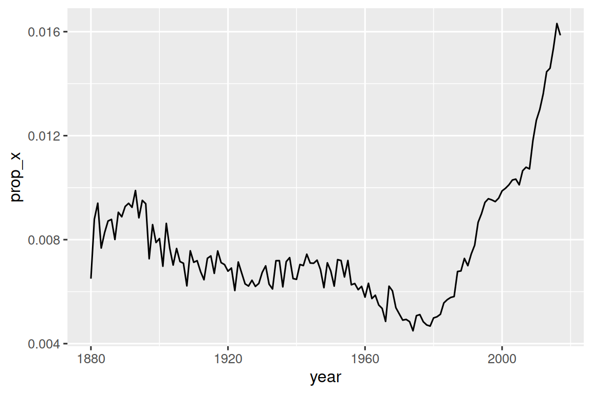

library(tidyverse)
library(babynames)15 Expresiones regulares
15.1 Introducción
En Capítulo 14, aprendió un montón de funciones útiles para trabajar con cadenas. Este capítulo se centrará en funciones que usan expresiones regulares, un lenguaje conciso y poderoso para describir patrones dentro de cadenas. El término “expresión regular” es un poco complicado, por lo que la mayoría de la gente lo abrevia como “regex”1 (del inglés, “regular expressions”) o “regexp”.
El capítulo comienza con los conceptos básicos de las expresiones regulares y las funciones stringr más útiles para el análisis de datos. Luego, ampliaremos su conocimiento de los patrones y cubriremos siete temas nuevos e importantes (escape, anclaje, clases de caracteres, clases de taquigrafía, cuantificadores, precedencia y agrupación). A continuación, hablaremos sobre algunos de los otros tipos de patrones con los que pueden trabajar las funciones stringr y las diversas “banderas” que le permiten modificar el funcionamiento de las expresiones regulares. Terminaremos con una encuesta de otros lugares en el tidyverse y base R donde podría usar expresiones regulares.
15.1.1 Requisitos previos
En este capítulo, usaremos funciones de expresiones regulares de stringr y tidyr, ambos miembros centrales de tidyverse, así como datos del paquete babynames.
A lo largo de este capítulo, usaremos una combinación de ejemplos en línea muy simples para que pueda obtener la idea básica, los datos de nombres de bebés y tres vectores de caracteres de stringr:
fruitcontiene los nombres de 80 frutas.wordscontiene 980 palabras comunes del ideoma inglés.sentencescontiene 720 oraciones cortas.
15.2 Conceptos básicos de patrones
Usaremos str_view() para aprender cómo funcionan los patrones de expresiones regulares. Usamos str_view() en el último capítulo para comprender mejor una cadena en comparación con su representación impresa, y ahora la usaremos con su segundo argumento, una expresión regular. Cuando se proporciona, str_view() mostrará solo los elementos del vector de cadena que coincidan, rodeando cada coincidencia con <> y, donde sea posible, resaltando la coincidencia en azul.
Los patrones más simples consisten en letras y números que coinciden exactamente con esos caracteres:
str_view(fruit, "berry")
#> [6] │ bil<berry>
#> [7] │ black<berry>
#> [10] │ blue<berry>
#> [11] │ boysen<berry>
#> [19] │ cloud<berry>
#> [21] │ cran<berry>
#> ... and 8 moreLas letras y los números coinciden exactamente y se denominan caracteres literales. La mayoría de los caracteres de puntuación, como ., +, *, [, ], y ?, tienen significados especiales2 y se denominan metacaracteres. Por ejemplo, . coincidirá con cualquier carácter3, por lo que "a." coincidirá con cualquier cadena que contenga una “a” seguida de otro carácter :
str_view(c("a", "ab", "ae", "bd", "ea", "eab"), "a.")
#> [2] │ <ab>
#> [3] │ <ae>
#> [6] │ e<ab>O podríamos encontrar todas las frutas que contienen una “a”, seguida de tres letras, seguidas de una “e”:
str_view(fruit, "a...e")
#> [1] │ <apple>
#> [7] │ bl<ackbe>rry
#> [48] │ mand<arine>
#> [51] │ nect<arine>
#> [62] │ pine<apple>
#> [64] │ pomegr<anate>
#> ... and 2 moreQuantifiers controla cuántas veces puede coincidir un patrón:
?hace que un patrón sea opcional (es decir, coincide 0 o 1 veces)+permite que un patrón se repita (es decir, coincide al menos una vez)*permite que un patrón sea opcional o se repita (es decir, coincide con cualquier número de veces, incluido 0).
# ab? coincide con una "a", opcionalmente seguida de una "b".
str_view(c("a", "ab", "abb"), "ab?")
#> [1] │ <a>
#> [2] │ <ab>
#> [3] │ <ab>b
# ab+ Coincide con una "a", seguida de al menos una "b".
str_view(c("a", "ab", "abb"), "ab+")
#> [2] │ <ab>
#> [3] │ <abb>
# ab* coincide con una "a", seguida de cualquier número de "b".
str_view(c("a", "ab", "abb"), "ab*")
#> [1] │ <a>
#> [2] │ <ab>
#> [3] │ <abb>Las clases de caracteres están definidas por [] y le permiten hacer coincidir un conjunto de caracteres, p.ej., [abcd] coincide con “a”, “b”, “c” o “d”. También puede invertir la coincidencia comenzando con ^: [^abcd] coincide con cualquier cosa excepto “a”, “b”, “c” o “d”. Podemos usar esta idea para encontrar las palabras que contienen una “x” rodeada de vocales, o una “y” rodeada de consonantes:
str_view(words, "[aeiou]x[aeiou]")
#> [284] │ <exa>ct
#> [285] │ <exa>mple
#> [288] │ <exe>rcise
#> [289] │ <exi>st
str_view(words, "[^aeiou]y[^aeiou]")
#> [836] │ <sys>tem
#> [901] │ <typ>ePuede usar alternancia, |, para elegir entre uno o más patrones alternativos. Por ejemplo, los siguientes patrones buscan frutas que contengan “manzana”, “melón” o “nuez”, o una vocal repetida.
str_view(fruit, "apple|melon|nut")
#> [1] │ <apple>
#> [13] │ canary <melon>
#> [20] │ coco<nut>
#> [52] │ <nut>
#> [62] │ pine<apple>
#> [72] │ rock <melon>
#> ... and 1 more
str_view(fruit, "aa|ee|ii|oo|uu")
#> [9] │ bl<oo>d orange
#> [33] │ g<oo>seberry
#> [47] │ lych<ee>
#> [66] │ purple mangost<ee>nLas expresiones regulares son muy compactas y utilizan muchos caracteres de puntuación, por lo que al principio pueden parecer abrumadoras y difíciles de leer. No te preocupes; mejorará con la práctica, y los patrones simples pronto se convertirán en una segunda naturaleza. Comencemos ese proceso practicando con algunas funciones útiles de stringr.
15.3 Funciones clave
Ahora que tiene los conceptos básicos de las expresiones regulares bajo su cinturón, usémoslos con algunas funciones stringr y tidyr. En la siguiente sección, aprenderá cómo detectar la presencia o ausencia de una coincidencia, cómo contar el número de coincidencias, cómo reemplazar una coincidencia con texto fijo y cómo extraer texto usando un patrón.
15.3.1 Detectar coincidencias
str_detect() devuelve un vector lógico que es TRUE si el patrón coincide con un elemento del vector de caracteres y FALSE en caso contrario:
str_detect(c("a", "b", "c"), "[aeiou]")
#> [1] TRUE FALSE FALSEDado que str_detect() devuelve un vector lógico de la misma longitud que el vector inicial, se empareja bien con filter(). Por ejemplo, este código encuentra todos los nombres más populares que contienen una “x” minúscula:
babynames |>
filter(str_detect(name, "x")) |>
count(name, wt = n, sort = TRUE)
#> # A tibble: 974 × 2
#> name n
#> <chr> <int>
#> 1 Alexander 665492
#> 2 Alexis 399551
#> 3 Alex 278705
#> 4 Alexandra 232223
#> 5 Max 148787
#> 6 Alexa 123032
#> # ℹ 968 more rowsTambién podemos usar str_detect() con summarize() combinándolo con sum() o mean(): sum(str_detect(x, pattern)) te dice el número de observaciones que coinciden y mean(str_detect(x, pattern)) te dice la proporción que coincide. Por ejemplo, el siguiente fragmento calcula y visualiza la proporción de nombres de bebés4 que contienen “x”, desglosados por año. ¡Parece que su popularidad ha aumentado radicalmente últimamente!
babynames |>
group_by(year) |>
summarize(prop_x = mean(str_detect(name, "x"))) |>
ggplot(aes(x = year, y = prop_x)) +
geom_line()
Hay dos funciones que están estrechamente relacionadas con str_detect(): str_subset() y str_which(). str_subset() devuelve solo las cadenas que contienen coincidencia. str_which() devuelve los índices de las cadenas que tienen coincidencia:
15.3.2 Contar coincidencias
El siguiente paso en complejidad de str_detect() es str_count(): en lugar de verdadero o falso, le dice cuántas coincidencias hay en cada cadena.
x <- c("apple", "banana", "pear")
str_count(x, "p")
#> [1] 2 0 1Tenga en cuenta que cada coincidencia comienza al final de la coincidencia anterior, es decir, las coincidencias de expresiones regulares nunca se superponen. Por ejemplo, en "abababa", ¿cuántas veces coincidirá el patrón "aba"? Las expresiones regulares dicen dos, no tres:
str_count("abababa", "aba")
#> [1] 2
str_view("abababa", "aba")
#> [1] │ <aba>b<aba>Es natural usar str_count() con mutate(). El siguiente ejemplo usa str_count() con clases de caracteres para contar el número de vocales y consonantes en cada nombre.
babynames |>
count(name) |>
mutate(
vowels = str_count(name, "[aeiou]"),
consonants = str_count(name, "[^aeiou]")
)
#> # A tibble: 97,310 × 4
#> name n vowels consonants
#> <chr> <int> <int> <int>
#> 1 Aaban 10 2 3
#> 2 Aabha 5 2 3
#> 3 Aabid 2 2 3
#> 4 Aabir 1 2 3
#> 5 Aabriella 5 4 5
#> 6 Aada 1 2 2
#> # ℹ 97,304 more rowsSi miras de cerca, notarás que hay algo mal con nuestros cálculos: “Aaban” contiene tres “a”, pero nuestro resumen solo reporta dos vocales. Eso es porque las expresiones regulares distinguen entre mayúsculas y minúsculas. Hay tres formas en las que podemos arreglar esto:
- Agregue las vocales mayúsculas a la clase de carácter:
str_count(name, "[aeiouAEIOU]"). - Dígale a la expresión regular que ignore el tamaño:
str_count(name, regex("[aeiou]", ignore_case = TRUE)). Hablaremos de más en Sección 15.5.1. - Usa
str_to_lower()para convertir los nombres a minúsculas:str_count(str_to_lower(name), "[aeiou]").
Esta variedad de enfoques es bastante típica cuando se trabaja con cadenas; a menudo, hay varias formas de alcanzar su objetivo, ya sea haciendo que su patrón sea más complicado o haciendo un preprocesamiento en su cadena. Si se queda atascado intentando un enfoque, a menudo puede ser útil cambiar de marcha y abordar el problema desde una perspectiva diferente.
En este caso, dado que estamos aplicando dos funciones al nombre, creo que es más fácil transformarlo primero:
babynames |>
count(name) |>
mutate(
name = str_to_lower(name),
vowels = str_count(name, "[aeiou]"),
consonants = str_count(name, "[^aeiou]")
)
#> # A tibble: 97,310 × 4
#> name n vowels consonants
#> <chr> <int> <int> <int>
#> 1 aaban 10 3 2
#> 2 aabha 5 3 2
#> 3 aabid 2 3 2
#> 4 aabir 1 3 2
#> 5 aabriella 5 5 4
#> 6 aada 1 3 1
#> # ℹ 97,304 more rows15.3.3 Reemplazar valores
Además de detectar y contar coincidencias, también podemos modificarlas con str_replace() y str_replace_all(). str_replace() reemplaza la primera coincidencia y, como sugiere el nombre, str_replace_all() reemplaza todas las coincidencias.
x <- c("apple", "pear", "banana")
str_replace_all(x, "[aeiou]", "-")
#> [1] "-ppl-" "p--r" "b-n-n-"str_remove() y str_remove_all() son atajos útiles para str_replace(x, patrón, ""):
x <- c("apple", "pear", "banana")
str_remove_all(x, "[aeiou]")
#> [1] "ppl" "pr" "bnn"Estas funciones se combinan de forma natural con mutate() al realizar la limpieza de datos y, a menudo, las aplicará repetidamente para quitar capas de formato inconsistente.
15.3.4 Extraer variables
La última función que discutiremos usa expresiones regulares para extraer datos de una columna en una o más columnas nuevas: separate_wider_regex(). Es un par de las funciones separate_wider_position() y separate_wider_delim() que aprendiste en Sección 14.4.2. Estas funciones viven en tidyr porque operan en (columnas de) data frames, en lugar de vectores individuales.
Vamos a crear un conjunto de datos simple para mostrar cómo funciona. Aquí tenemos algunos datos derivados de babynames donde tenemos el nombre, el género y la edad de un grupo de personas en un formato bastante extraño 5:
df <- tribble(
~str,
"<Sheryl>-F_34",
"<Kisha>-F_45",
"<Brandon>-N_33",
"<Sharon>-F_38",
"<Penny>-F_58",
"<Justin>-M_41",
"<Patricia>-F_84",
)Para extraer estos datos usando separate_wider_regex() solo necesitamos construir una secuencia de expresiones regulares que coincidan con cada pieza. Si queremos que el contenido de esa pieza aparezca en la salida, le damos un nombre:
df |>
separate_wider_regex(
str,
patterns = c(
"<",
name = "[A-Za-z]+",
">-",
gender = ".",
"_",
age = "[0-9]+"
)
)
#> # A tibble: 7 × 3
#> name gender age
#> <chr> <chr> <chr>
#> 1 Sheryl F 34
#> 2 Kisha F 45
#> 3 Brandon N 33
#> 4 Sharon F 38
#> 5 Penny F 58
#> 6 Justin M 41
#> # ℹ 1 more rowSi la coincidencia falla, puede usar too_few = "debug" para descubrir qué salió mal, al igual que separate_wider_delim() y separate_wider_position().
15.3.5 Ejercicios
¿Qué nombre de bebé tiene más vocales? ¿Qué nombre tiene la mayor proporción de vocales? (Pista: ¿cuál es el denominador?)
Reemplace todas las barras diagonales en
"a/b/c/d/e"con barras invertidas. ¿Qué sucede si intenta deshacer la transformación reemplazando todas las barras diagonales inversas con barras diagonales? (Discutiremos el problema muy pronto).Implemente una versión simple de
str_to_lower()usandostr_replace_all().Cree una expresión regular que coincida con los números de teléfono tal como se escriben comúnmente en su país.
15.4 Detalles del patrón
Ahora que comprende los conceptos básicos del lenguaje de patrones y cómo usarlo con algunas funciones stringr y tidyr, es hora de profundizar en más detalles. Primero, comenzaremos con escapar, lo que le permite unir metacaracteres que de otro modo serían tratados de manera especial. A continuación, aprenderá sobre anclajes que le permiten hacer coincidir el inicio o el final de la cadena. Luego, aprenderá más sobre las clases de caracteres y sus accesos directos que le permiten hacer coincidir cualquier carácter de un conjunto. A continuación, conocerá los detalles finales de los cuantificadores que controlan cuántas veces puede coincidir un patrón. Luego, tenemos que cubrir el tema importante (pero complejo) de precedencia de operadores y paréntesis. Y terminaremos con algunos detalles de agrupación de componentes de patrones.
Los términos que usamos aquí son los nombres técnicos de cada componente. No siempre son los más evocadores de su propósito, pero es muy útil conocer los términos correctos si luego desea buscar en Google para obtener más detalles.
15.4.1 Escapar
Para hacer coincidir un . literal, necesita un escape que le indique a la expresión regular que coincida con los metacaracteres6 literalmente. Al igual que las cadenas, las expresiones regulares usan la barra invertida para escapar. Entonces, para hacer coincidir un ., necesita la expresión regular \.. Desafortunadamente esto crea un problema. Usamos cadenas para representar expresiones regulares, y \ también se usa como símbolo de escape en cadenas. Así que para crear la expresión regular \. necesitamos la cadena "\\.", como muestra el siguiente ejemplo.
# Para crear la expresión regular \., necesitamos usar \\.
dot <- "\\."
# Pero la expresión en sí solo contiene una \
str_view(dot)
#> [1] │ \.
# Y esto le dice a R que busque una explicita.
str_view(c("abc", "a.c", "bef"), "a\\.c")
#> [2] │ <a.c>En este libro, normalmente escribiremos expresiones regulares sin comillas, como \.. Si necesitamos enfatizar lo que realmente escribirá, lo rodearemos con comillas y agregaremos escapes adicionales, como "\\.".
Si \ se usa como un carácter de escape en expresiones regulares, ¿cómo hace coincidir un literal \? Bueno, necesitas escapar, creando la expresión regular \\. Para crear esa expresión regular, debe usar una cadena, que también debe escapar de \. Eso significa que para hacer coincidir un \ literal, debe escribir "\\\\" — ¡necesita cuatro barras diagonales inversas para que coincida con uno!
x <- "a\\b"
str_view(x)
#> [1] │ a\b
str_view(x, "\\\\")
#> [1] │ a<\>bAlternativamente, puede que le resulte más fácil usar las cadenas sin formato que aprendió en Sección 14.2.2). Eso le permite evitar una capa de escape:
str_view(x, r"{\\}")
#> [1] │ a<\>bSi está tratando de hacer coincidir un literal ., $, |, *, +, ?, {, }, (, ), hay una alternativa al uso de un escape de barra invertida: puede usar una clase de carácter: [.], [$], [|], … todos coinciden con los valores literales.
str_view(c("abc", "a.c", "a*c", "a c"), "a[.]c")
#> [2] │ <a.c>
str_view(c("abc", "a.c", "a*c", "a c"), ".[*]c")
#> [3] │ <a*c>15.4.2 Anclajes
De forma predeterminada, las expresiones regulares coincidirán con cualquier parte de una cadena. Si desea hacer coincidir al principio del final, necesita anclar la expresión regular usando ^ para que coincida con el comienzo de la cadena o $ para que coincida con el final:
str_view(fruit, "^a")
#> [1] │ <a>pple
#> [2] │ <a>pricot
#> [3] │ <a>vocado
str_view(fruit, "a$")
#> [4] │ banan<a>
#> [15] │ cherimoy<a>
#> [30] │ feijo<a>
#> [36] │ guav<a>
#> [56] │ papay<a>
#> [74] │ satsum<a>Es tentador pensar que $ debería coincidir con el comienzo de una cadena, porque así es como escribimos cantidades en dólares, pero no es lo que quieren las expresiones regulares.
Para obligar a una expresión regular a coincidir solo con la cadena completa, asegúrela con ^ y $:
str_view(fruit, "apple")
#> [1] │ <apple>
#> [62] │ pine<apple>
str_view(fruit, "^apple$")
#> [1] │ <apple>También puede hacer coincidir el límite entre palabras (es decir, el comienzo o el final de una palabra) con \b. Esto puede ser particularmente útil cuando se usa la herramienta de búsqueda y reemplazo de RStudio. Por ejemplo, si para encontrar todos los usos de sum(), puede buscar \bsum\b para evitar la coincidencia de summarize, summary, rowsum y así sucesivamente:
x <- c("summary(x)", "summarize(df)", "rowsum(x)", "sum(x)")
str_view(x, "sum")
#> [1] │ <sum>mary(x)
#> [2] │ <sum>marize(df)
#> [3] │ row<sum>(x)
#> [4] │ <sum>(x)
str_view(x, "\\bsum\\b")
#> [4] │ <sum>(x)Cuando se usan solos, los anclajes producirán una coincidencia de ancho cero:
str_view("abc", c("$", "^", "\\b"))
#> [1] │ abc<>
#> [2] │ <>abc
#> [3] │ <>abc<>Esto lo ayuda a comprender lo que sucede cuando reemplaza un ancla independiente:
str_replace_all("abc", c("$", "^", "\\b"), "--")
#> [1] "abc--" "--abc" "--abc--"15.4.3 Clases de caracteres
Una clase de carácter, o un conjunto de caracteres, le permite hacer coincidir cualquier carácter en un conjunto. Como discutimos anteriormente, puede construir sus propios conjuntos con [], donde [abc] coincide con “a”, “b” o “c” y [^abc] coincide con cualquier carácter excepto “a”. , “b” o “c”. Además de ^, hay otros dos caracteres que tienen un significado especial dentro de []:
-define un rango, p.ej.,[a-z]coincide con cualquier letra minúscula y[0-9]coincide con cualquier número.\escapa a los caracteres especiales, por lo que[\^\-\]]coincide^,-, o].
Aquí hay algunos ejemplos:
x <- "abcd ABCD 12345 -!@#%."
str_view(x, "[abc]+")
#> [1] │ <abc>d ABCD 12345 -!@#%.
str_view(x, "[a-z]+")
#> [1] │ <abcd> ABCD 12345 -!@#%.
str_view(x, "[^a-z0-9]+")
#> [1] │ abcd< ABCD >12345< -!@#%.>
# Necesita un escape para hacer coincidir caracteres que de otro modo son
# especial dentro de []
str_view("a-b-c", "[a-c]")
#> [1] │ <a>-<b>-<c>
str_view("a-b-c", "[a\\-c]")
#> [1] │ <a><->b<-><c>Algunas clases de caracteres se usan con tanta frecuencia que obtienen su propio atajo. Ya has visto ., que coincide con cualquier carácter excepto una nueva línea. Hay otros tres pares particularmente útiles7:
\dcoincide con cualquier dígito;
\Dcoincide con cualquier cosa que no sea un dígito.\scoincide con cualquier espacio en blanco (por ejemplo, espacio, tabulador, nueva línea);
\Scoincide con cualquier cosa que no sea un espacio en blanco.\wcoincide con cualquier carácter de “palabra”, es decir, letras y números;
\Wcoincide con cualquier carácter “no palabra”.
El siguiente código muestra los seis atajos con una selección de letras, números y signos de puntuación.
x <- "abcd ABCD 12345 -!@#%."
str_view(x, "\\d+")
#> [1] │ abcd ABCD <12345> -!@#%.
str_view(x, "\\D+")
#> [1] │ <abcd ABCD >12345< -!@#%.>
str_view(x, "\\s+")
#> [1] │ abcd< >ABCD< >12345< >-!@#%.
str_view(x, "\\S+")
#> [1] │ <abcd> <ABCD> <12345> <-!@#%.>
str_view(x, "\\w+")
#> [1] │ <abcd> <ABCD> <12345> -!@#%.
str_view(x, "\\W+")
#> [1] │ abcd< >ABCD< >12345< -!@#%.>15.4.4 Cuantificadores
Los cuantificadores controlan cuántas veces coincide un patrón. En Sección 15.2, aprendió sobre ? (0 o 1 coincidencias), + (1 o más coincidencias) y * (0 o más coincidencias). Por ejemplo, colou?r coincidirá con la ortografía estadounidense o británica, \d+ coincidirá con uno o más dígitos y \s? coincidirá opcionalmente con un único elemento de espacio en blanco. También puede especificar el número de coincidencias con precisión con {}:
{n}coincide exactamente n veces.{n,}coincide al menos n veces.{n,m}coincide entre n y m veces.
15.4.5 Precedencia de operadores y paréntesis
¿Con qué coincide ab+? ¿Coincide con “a” seguido de una o más “b”, o coincide con “ab” repetido cualquier número de veces? ¿Con qué coincide ^a|b$? ¿Coincide con la cadena completa a o la cadena completa b, o coincide con una cadena que comienza con a o una cadena que termina con b?
La respuesta a estas preguntas está determinada por la precedencia de operadores, similar a las reglas PEMDAS o BEDMAS que quizás haya aprendido en la escuela. Sabes que a + b * c es equivalente a a + (b * c) y no (a + b) * c porque * tiene mayor precedencia y + tiene menor precedencia: calculas * antes de +.
De manera similar, las expresiones regulares tienen sus propias reglas de precedencia: los cuantificadores tienen una precedencia alta y la alternancia tiene una precedencia baja, lo que significa que ab+ es equivalente a a(b+), y ^a|b$ es equivalente a (^a )|(b$). Al igual que con el álgebra, puede usar paréntesis para anular el orden habitual. Pero a diferencia del álgebra, es poco probable que recuerdes las reglas de precedencia para las expresiones regulares, así que siéntete libre de usar paréntesis libremente.
15.4.6 Agrupación y captura
Además de anular la precedencia de los operadores, los paréntesis tienen otro efecto importante: crean grupos de captura que le permiten usar subcomponentes de la coincidencia.
La primera forma de usar un grupo de captura es hacer referencia a él dentro de una coincidencia con referencia posterior: \1 se refiere a la coincidencia contenida en el primer paréntesis, \2 en el segundo paréntesis, y así sucesivamente. Por ejemplo, el siguiente patrón encuentra todas las frutas que tienen un par de letras repetido:
str_view(fruit, "(..)\\1")
#> [4] │ b<anan>a
#> [20] │ <coco>nut
#> [22] │ <cucu>mber
#> [41] │ <juju>be
#> [56] │ <papa>ya
#> [73] │ s<alal> berryY este encuentra todas las palabras que comienzan y terminan con el mismo par de letras:
str_view(words, "^(..).*\\1$")
#> [152] │ <church>
#> [217] │ <decide>
#> [617] │ <photograph>
#> [699] │ <require>
#> [739] │ <sense>También puede usar referencias anteriores en str_replace(). Por ejemplo, este código cambia el orden de la segunda y tercera palabra en sentences:
sentences |>
str_replace("(\\w+) (\\w+) (\\w+)", "\\1 \\3 \\2") |>
str_view()
#> [1] │ The canoe birch slid on the smooth planks.
#> [2] │ Glue sheet the to the dark blue background.
#> [3] │ It's to easy tell the depth of a well.
#> [4] │ These a days chicken leg is a rare dish.
#> [5] │ Rice often is served in round bowls.
#> [6] │ The of juice lemons makes fine punch.
#> ... and 714 moreSi desea extraer las coincidencias para cada grupo, puede usar str_match(). Pero str_match() devuelve una matriz, por lo que no es particularmente fácil trabajar con 8:
sentences |>
str_match("the (\\w+) (\\w+)") |>
head()
#> [,1] [,2] [,3]
#> [1,] "the smooth planks" "smooth" "planks"
#> [2,] "the sheet to" "sheet" "to"
#> [3,] "the depth of" "depth" "of"
#> [4,] NA NA NA
#> [5,] NA NA NA
#> [6,] NA NA NAPuede convertir a un tibble y nombrar las columnas:
sentences |>
str_match("the (\\w+) (\\w+)") |>
as_tibble(.name_repair = "minimal") |>
set_names("match", "word1", "word2")
#> # A tibble: 720 × 3
#> match word1 word2
#> <chr> <chr> <chr>
#> 1 the smooth planks smooth planks
#> 2 the sheet to sheet to
#> 3 the depth of depth of
#> 4 <NA> <NA> <NA>
#> 5 <NA> <NA> <NA>
#> 6 <NA> <NA> <NA>
#> # ℹ 714 more rowsPero luego básicamente ha recreado su propia versión de separate_wider_regex(). De hecho, detrás de escena, separate_wider_regex() convierte su vector de patrones en una sola expresión regular que utiliza la agrupación para capturar los componentes nombrados.
Ocasionalmente, querrá usar paréntesis sin crear grupos coincidentes. Puede crear un grupo que no captura con (?:).
x <- c("a gray cat", "a grey dog")
str_match(x, "gr(e|a)y")
#> [,1] [,2]
#> [1,] "gray" "a"
#> [2,] "grey" "e"
str_match(x, "gr(?:e|a)y")
#> [,1]
#> [1,] "gray"
#> [2,] "grey"15.4.7 Ejercicios
¿Cómo haría coincidir la cadena literal
"'\? ¿Qué tal"$^$"?Explique por qué cada uno de estos patrones no coincide con
\:"\","\\","\\\".Dado el corpus de palabras comunes en
stringr::words, cree expresiones regulares que encuentren todas las palabras que:- Empiezan con “y”.
- No empiezan con “y”.
- Terminan con “x”.
- Tienen exactamente tres letras de largo. (¡No hagas trampa usando
str_length()!) - Tener siete letras o más.
- Contienen un par de vocales y consonantes.
- Contener al menos dos pares de vocales y consonantes seguidos.
- Sólo consisten en pares repetidos de vocales y consonantes.
Cree 11 expresiones regulares que coincidan con la ortografía británica o estadounidense para cada una de las siguientes palabras: airplane/aeroplane, aluminum/aluminium, analog/analogue, ass/arse, center/centre, defense/defence, donut/doughnut, gray/grey, modeling/modelling, skeptic/sceptic, summarize/summarise. ¡Intenta hacer la expresión regular más corta posible!
Cambia la primera y la última letra en
palabras. ¿Cuáles de esas cadenas siguen siendopalabras?Describa con palabras con qué coinciden estas expresiones regulares: (lea atentamente para ver si cada entrada es una expresión regular o una cadena que define una expresión regular).
^.*$"\\{.+\\}"\d{4}-\d{2}-\d{2}"\\\\{4}"\..\..\..(.)\1\1"(..)\\1"
Resuelva los crucigramas de expresiones regulares para principiantes en https://regexcrossword.com/challenges/beginner.
15.5 Control de patrones
Es posible ejercer un control adicional sobre los detalles de la coincidencia mediante el uso de un objeto de patrón en lugar de solo una cadena. Esto le permite controlar los llamados indicadores de expresiones regulares y hacer coincidir varios tipos de cadenas fijas, como se describe a continuación.
15.5.1 Banderas de expresiones regulares
Hay una serie de configuraciones que se pueden usar para controlar los detalles de la expresión regular. Estas configuraciones a menudo se denominan banderas en otros lenguajes de programación. En stringr, puede usarlos envolviendo el patrón en una llamada a regex(). La bandera más útil es probablemente ignore_case = TRUE porque permite que los caracteres coincidan con sus formas mayúsculas o minúsculas:
bananas <- c("banana", "Banana", "BANANA")
str_view(bananas, "banana")
#> [1] │ <banana>
str_view(bananas, regex("banana", ignore_case = TRUE))
#> [1] │ <banana>
#> [2] │ <Banana>
#> [3] │ <BANANA>Si está trabajando mucho con cadenas multilínea (es decir, cadenas que contienen \n), dotall y multiline también pueden ser útiles:
dotall = TRUEpermite que.coincida con todo, incluido\n:x <- "Line 1\nLine 2\nLine 3" str_view(x, ".Line") #> ✖ Empty `string` provided. str_view(x, regex(".Line", dotall = TRUE)) #> [1] │ Line 1< #> │ Line> 2< #> │ Line> 3multiline = TRUEhace que^y$coincidan con el inicio y el final de cada línea en lugar del inicio y el final de la cadena completa:x <- "Line 1\nLine 2\nLine 3" str_view(x, "^Line") #> [1] │ <Line> 1 #> │ Line 2 #> │ Line 3 str_view(x, regex("^Line", multiline = TRUE)) #> [1] │ <Line> 1 #> │ <Line> 2 #> │ <Line> 3
Finalmente, si está escribiendo una expresión regular complicada y le preocupa no entenderla en el futuro, puede probar comentarios = TRUE. Ajusta el lenguaje de patrones para ignorar los espacios y las líneas nuevas, así como todo lo que se encuentra después de #. Esto le permite usar comentarios y espacios en blanco para hacer que las expresiones regulares complejas sean más comprensibles9, como en el siguiente ejemplo:
phone <- regex(
r"(
\(? # paréntesis de apertura opcionales
(\d{3}) # área de codigo
[)\-]? # paréntesis o guión de cierre opcionales
\ ? # spacio opcional
(\d{3}) # otros tres números
[\ -]? # espacio o guión opcional
(\d{4}) # cuatro números más
)",
comments = TRUE
)
str_extract(c("514-791-8141", "(123) 456 7890", "123456"), phone)
#> [1] "514-791-8141" "(123) 456 7890" NASi está utilizando comentarios y desea hacer coincidir un espacio, una nueva línea o #, deberá escapar con \.
15.5.2 Coincidencias fijas
Puede optar por no participar en las reglas de expresiones regulares utilizando fixed():
str_view(c("", "a", "."), fixed("."))
#> [3] │ <.>fixed() también le da la posibilidad de ignorar mayúsculas y minúsculas:
str_view("x X", "X")
#> [1] │ x <X>
str_view("x X", fixed("X", ignore_case = TRUE))
#> [1] │ <x> <X>Si está trabajando con texto que no está en inglés, probablemente querrá coll() en lugar de fixed(), ya que implementa las reglas completas para el uso de mayúsculas tal como las usa el locale que especifique. Consulte Sección 14.6 para obtener más detalles sobre las configuraciones regionales.
str_view("i İ ı I", fixed("İ", ignore_case = TRUE))
#> [1] │ i <İ> ı I
str_view("i İ ı I", coll("İ", ignore_case = TRUE, locale = "tr"))
#> [1] │ <i> <İ> ı I15.6 Práctica
Para poner en práctica estas ideas, resolveremos a continuación algunos problemas semiauténticos. Discutiremos tres técnicas generales:
- Comprobar su trabajo mediante la creación de controles positivos y negativos simples
- Combinar expresiones regulares con álgebra booleana
- Crear patrones complejos usando la manipulación de cadenas
15.6.1 Revisa tu trabajo
Primero, encontremos todas las oraciones que comienzan con The. Usar el ancla ^ solo no es suficiente:
str_view(sentences, "^The")
#> [1] │ <The> birch canoe slid on the smooth planks.
#> [4] │ <The>se days a chicken leg is a rare dish.
#> [6] │ <The> juice of lemons makes fine punch.
#> [7] │ <The> box was thrown beside the parked truck.
#> [8] │ <The> hogs were fed chopped corn and garbage.
#> [11] │ <The> boy was there when the sun rose.
#> ... and 271 morePorque ese patrón también coincide con oraciones que comienzan con palabras como They o These. Necesitamos asegurarnos de que la “e” sea la última letra de la palabra, lo que podemos hacer agregando un límite de palabra:
str_view(sentences, "^The\\b")
#> [1] │ <The> birch canoe slid on the smooth planks.
#> [6] │ <The> juice of lemons makes fine punch.
#> [7] │ <The> box was thrown beside the parked truck.
#> [8] │ <The> hogs were fed chopped corn and garbage.
#> [11] │ <The> boy was there when the sun rose.
#> [13] │ <The> source of the huge river is the clear spring.
#> ... and 250 more¿Qué hay de encontrar todas las oraciones que comienzan con un pronombre?
str_view(sentences, "^She|He|It|They\\b")
#> [3] │ <It>'s easy to tell the depth of a well.
#> [15] │ <He>lp the woman get back to her feet.
#> [27] │ <He>r purse was full of useless trash.
#> [29] │ <It> snowed, rained, and hailed the same morning.
#> [63] │ <He> ran half way to the hardware store.
#> [90] │ <He> lay prone and hardly moved a limb.
#> ... and 57 moreUna inspección rápida de los resultados muestra que estamos obteniendo algunas coincidencias falsas. Eso es porque nos hemos olvidado de usar paréntesis:
str_view(sentences, "^(She|He|It|They)\\b")
#> [3] │ <It>'s easy to tell the depth of a well.
#> [29] │ <It> snowed, rained, and hailed the same morning.
#> [63] │ <He> ran half way to the hardware store.
#> [90] │ <He> lay prone and hardly moved a limb.
#> [116] │ <He> ordered peach pie with ice cream.
#> [127] │ <It> caught its hind paw in a rusty trap.
#> ... and 51 moreQuizás se pregunte cómo podría detectar tal error si no ocurrió en las primeras coincidencias. Una buena técnica es crear algunas coincidencias positivas y negativas y usarlas para probar que su patrón funciona como se esperaba:
pos <- c("He is a boy", "She had a good time")
neg <- c("Shells come from the sea", "Hadley said 'It's a great day'")
pattern <- "^(She|He|It|They)\\b"
str_detect(pos, pattern)
#> [1] TRUE TRUE
str_detect(neg, pattern)
#> [1] FALSE FALSEPor lo general, es mucho más fácil encontrar buenos ejemplos positivos que ejemplos negativos, porque toma un tiempo antes de que seas lo suficientemente bueno con las expresiones regulares para predecir dónde están tus debilidades. Sin embargo, siguen siendo útiles: a medida que trabaja en el problema, puede acumular lentamente una colección de sus errores, asegurándose de que nunca cometerá el mismo error dos veces.
15.6.2 Operaciones booleanas
Imagina que queremos encontrar palabras que solo contengan consonantes. Una técnica es crear una clase de carácter que contenga todas las letras excepto las vocales ([^aeiou]), luego permitir que coincida con cualquier número de letras ([^aeiou]+), luego forzarlo a que coincida con el toda la cadena anclándola al principio y al final (^[^aeiou]+$):
str_view(words, "^[^aeiou]+$")
#> [123] │ <by>
#> [249] │ <dry>
#> [328] │ <fly>
#> [538] │ <mrs>
#> [895] │ <try>
#> [952] │ <why>Pero puedes hacer que este problema sea un poco más fácil dándole la vuelta al problema. En lugar de buscar palabras que contengan solo consonantes, podríamos buscar palabras que no contengan vocales:
str_view(words[!str_detect(words, "[aeiou]")])
#> [1] │ by
#> [2] │ dry
#> [3] │ fly
#> [4] │ mrs
#> [5] │ try
#> [6] │ whyEsta es una técnica útil siempre que se trate de combinaciones lógicas, particularmente aquellas que involucran “y” o “no”. Por ejemplo, imagina si quieres encontrar todas las palabras que contienen “a” y “b”. No hay un operador “y” integrado en las expresiones regulares, por lo que debemos abordarlo buscando todas las palabras que contengan una “a” seguida de una “b” o una “b” seguida de una “a”:
str_view(words, "a.*b|b.*a")
#> [2] │ <ab>le
#> [3] │ <ab>out
#> [4] │ <ab>solute
#> [62] │ <availab>le
#> [66] │ <ba>by
#> [67] │ <ba>ck
#> ... and 24 moreEs más sencillo combinar los resultados de dos llamadas para str_detect():
words[str_detect(words, "a") & str_detect(words, "b")]
#> [1] "able" "about" "absolute" "available" "baby" "back"
#> [7] "bad" "bag" "balance" "ball" "bank" "bar"
#> [13] "base" "basis" "bear" "beat" "beauty" "because"
#> [19] "black" "board" "boat" "break" "brilliant" "britain"
#> [25] "debate" "husband" "labour" "maybe" "probable" "table"¿Qué pasaría si quisiéramos ver si hay una palabra que contiene todas las vocales? ¡Si lo hiciéramos con patrones, necesitaríamos generar 5! (120) patrones diferentes:
words[str_detect(words, "a.*e.*i.*o.*u")]
# ...
words[str_detect(words, "u.*o.*i.*e.*a")]Es mucho más sencillo combinar cinco llamadas para str_detect():
words[
str_detect(words, "a") &
str_detect(words, "e") &
str_detect(words, "i") &
str_detect(words, "o") &
str_detect(words, "u")
]
#> character(0)En general, si te quedas atascado tratando de crear una única expresión regular que resuelva tu problema, da un paso atrás y piensa si podrías dividir el problema en partes más pequeñas, resolviendo cada desafío antes de pasar al siguiente.
15.6.3 Crear un patrón con código
¿Qué pasaría si quisiéramos encontrar todas las ‘oraciones’ que mencionan un color? La idea básica es simple: simplemente combinamos alternancia con límites de palabras.
str_view(sentences, "\\b(red|green|blue)\\b")
#> [2] │ Glue the sheet to the dark <blue> background.
#> [26] │ Two <blue> fish swam in the tank.
#> [92] │ A wisp of cloud hung in the <blue> air.
#> [148] │ The spot on the blotter was made by <green> ink.
#> [160] │ The sofa cushion is <red> and of light weight.
#> [174] │ The sky that morning was clear and bright <blue>.
#> ... and 20 morePero a medida que aumenta la cantidad de colores, rápidamente se vuelve tedioso construir este patrón a mano. ¿No sería bueno si pudiéramos almacenar los colores en un vector?
rgb <- c("red", "green", "blue")Bueno, ¡podemos! Solo necesitamos crear el patrón a partir del vector usando str_c() y str_flatten():
str_c("\\b(", str_flatten(rgb, "|"), ")\\b")
#> [1] "\\b(red|green|blue)\\b"Podríamos hacer este patrón más completo si tuviéramos una buena lista de colores. Un lugar desde el que podríamos comenzar es la lista de colores incorporados que R puede usar para los gráficos:
str_view(colors())
#> [1] │ white
#> [2] │ aliceblue
#> [3] │ antiquewhite
#> [4] │ antiquewhite1
#> [5] │ antiquewhite2
#> [6] │ antiquewhite3
#> ... and 651 morePero primero eliminemos las variantes numeradas:
cols <- colors()
cols <- cols[!str_detect(cols, "\\d")]
str_view(cols)
#> [1] │ white
#> [2] │ aliceblue
#> [3] │ antiquewhite
#> [4] │ aquamarine
#> [5] │ azure
#> [6] │ beige
#> ... and 137 moreEntonces podemos convertir esto en un patrón gigante. No mostraremos el patrón aquí porque es enorme, pero puedes verlo funcionar:
pattern <- str_c("\\b(", str_flatten(cols, "|"), ")\\b")
str_view(sentences, pattern)
#> [2] │ Glue the sheet to the dark <blue> background.
#> [12] │ A rod is used to catch <pink> <salmon>.
#> [26] │ Two <blue> fish swam in the tank.
#> [66] │ Cars and busses stalled in <snow> drifts.
#> [92] │ A wisp of cloud hung in the <blue> air.
#> [112] │ Leaves turn <brown> and <yellow> in the fall.
#> ... and 57 moreEn este ejemplo, cols solo contiene números y letras, por lo que no debe preocuparse por los metacaracteres. Pero, en general, siempre que cree patrones a partir de cadenas existentes, es aconsejable ejecutarlos a través de str_escape() para asegurarse de que coincidan literalmente.
15.6.4 Ejercicios
Para cada uno de los siguientes desafíos, intente resolverlos usando una sola expresión regular y una combinación de múltiples llamadas
str_detect().- Encuentra todas las
palabrasque comienzan o terminan conx. - Encuentra todas las
palabrasque comienzan con una vocal y terminan con una consonante. - ¿Hay alguna
palabraque contenga al menos una de cada vocal diferente?
- Encuentra todas las
¿Construye patrones para encontrar evidencia a favor y en contra de la regla “i antes de e excepto después de c”?
colors()contiene una serie de modificadores como “lightgray” y “darkblue”. ¿Cómo podría identificar automáticamente estos modificadores? (Piense en cómo podría detectar y luego eliminar los colores que se modifican).Cree una expresión regular que encuentre cualquier conjunto de datos base de R. Puede obtener una lista de estos conjuntos de datos mediante un uso especial de la función
data():data(package = "datasets")$results[, "Item"]. Tenga en cuenta que varios conjuntos de datos antiguos son vectores individuales; estos contienen el nombre del “data frame” de agrupación entre paréntesis, por lo que deberá eliminarlos.
15.7 Expresiones regulares en otros lugares
Al igual que en las funciones stringr y tidyr, hay muchos otros lugares en R donde puede usar expresiones regulares. Las siguientes secciones describen algunas otras funciones útiles en el tidyverse más amplio y la base R.
15.7.1 tidyverse
Hay otros tres lugares particularmente útiles en los que es posible que desee utilizar expresiones regulares
matches(pattern)seleccionará todas las variables cuyo nombre coincida con el patrón proporcionado. Es una función “tidyselect” que puede usar en cualquier lugar en cualquier función tidyverse que seleccione variables (p.ej.,select(),rename_with()yacross()).pivot_longer()'snames_patternaargumento toma un vector de expresiones regulares, al igual queseparate_wider_regex(). Es útil cuando se extraen datos de nombres de variables con una estructura compleja.El argumento
delimenseparate_longer_delim()yseparate_wider_delim()generalmente coincide con una cadena fija, pero puede usarregex()para que coincida con un patrón. Esto es útil, por ejemplo, si desea hacer coincidir una coma seguida opcionalmente por un espacio, es decir,regex(", ?").
15.7.2 R base
apropos(pattern) busca todos los objetos disponibles del entorno global que coincidan con el patrón dado. Esto es útil si no puede recordar el nombre de una función:
apropos("replace")
#> [1] "%+replace%" "replace" "replace_na"
#> [4] "replace_theme" "replace_values" "replace_when"
#> [7] "setReplaceMethod" "str_replace" "str_replace_all"
#> [10] "str_replace_na" "theme_replace"list.files(path, pattern) enumera todos los archivos en path que coinciden con una expresión regular pattern. Por ejemplo, puede encontrar todos los archivos R Markdown en el directorio actual con:
head(list.files(pattern = "\\.Rmd$"))
#> character(0)Vale la pena señalar que el lenguaje de patrones usado por base R es ligeramente diferente al usado por stringr. Esto se debe a que stringr está construido sobre el paquete stringi, que a su vez está construido sobre el motor ICU, mientras que las funciones básicas de R usan el motor TRE o el motor PCRE, dependiendo de si ha establecido o no perl = TRUE. Afortunadamente, los conceptos básicos de las expresiones regulares están tan bien establecidos que encontrará pocas variaciones cuando trabaje con los patrones que aprenderá en este libro. Solo debe ser consciente de la diferencia cuando comience a confiar en funciones avanzadas como rangos de caracteres Unicode complejos o funciones especiales que usan la sintaxis (?…).
15.8 Resumen
Con cada carácter de puntuación potencialmente sobrecargado de significado, las expresiones regulares son uno de los lenguajes más compactos que existen. Definitivamente son confusos al principio, pero a medida que entrenas tus ojos para leerlos y tu cerebro para entenderlos, desbloqueas una habilidad poderosa que puedes usar en R y en muchos otros lugares.
En este capítulo, ha comenzado su viaje para convertirse en un maestro de las expresiones regulares aprendiendo las funciones más útiles de stringr y los componentes más importantes del lenguaje de expresiones regulares. Y hay muchos recursos para aprender más.
Un buen lugar para comenzar es vignette("regular-expressions", package = "stringr"): documenta el conjunto completo de sintaxis compatible con stringr. Otra referencia útil es https://www.regular-expressions.info/. No es específico de R, pero puede usarlo para conocer las características más avanzadas de las expresiones regulares y cómo funcionan bajo el capó.
También es bueno saber que stringr está implementado sobre el paquete stringi por Marek Gagolewski. Si tiene dificultades para encontrar una función que haga lo que necesita en stringr, no tenga miedo de buscar en stringi. Encontrará que stringi es muy fácil de aprender porque sigue muchas de las mismas convenciones que stringr.
En el próximo capítulo, hablaremos sobre una estructura de datos estrechamente relacionada con las cadenas: los factores. Los factores se utilizan para representar datos categóricos en R, es decir, datos con un conjunto fijo y conocido de valores posibles identificados por un vector de cadenas.
Puede pronunciarlo con una g dura (reg-x) o una g suave (rej-x).↩︎
Aprenderá cómo escapar de estos significados especiales en Sección 15.4.1.↩︎
Bueno, cualquier carácter aparte de
\n.↩︎Esto nos da la proporción de nombres que contienen una “x”; si quisiera la proporción de bebés con un nombre que contiene una x, necesitaría realizar una media ponderada.↩︎
Desearíamos poder asegurarle que nunca verá algo tan extraño en la vida real, pero desafortunadamente en el transcurso de su carrera es probable que vea cosas mucho más extrañas.↩︎
El conjunto completo de metacaracteres es
.^$\|*+?{}[]()↩︎Recuerde, para crear una expresión regular que contenga
\do\s, deberá escapar del\para la cadena, por lo que escribirá"\\d"o"\\s ".↩︎comments = TRUEes particularmente efectivo en combinación con una cadena sin procesar, como la que usamos aquí.↩︎comments = TRUEes particularmente efectivo en combinación con una cadena sin procesar, como la que usamos aquí.↩︎